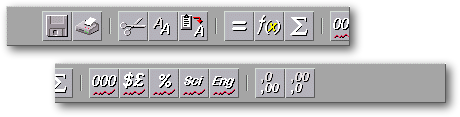
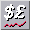
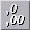
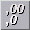

<!-- Documentation XQuad (c)1995-2000 AXENE contact axene@axene.org>
<html>

<head>
<title>Horizontal Toolbar: &quot;General Functions&quot;</title>
</head>

<body BGCOLOR="#FFFFFF" BACKGROUND="Images/back.gif" TEXT="#000000">

<p ALIGN="right">  </p>

<p><br>
<br>
The General Functions toolbar quickly accesses frequently-used functions. Unlike other
toolbars, it has no specific theme.<br>
<br>
</p>

<hr>

<p align="center"><br>
 <br>
<small><i>Screen shot: Horizontal Toolbar &quot;General Functions&quot;</i></small></p>

<p><br>
</p>

<hr>

<p><br>
</p>

<h3>First Section of the Toolbar:</h3>

<ul>
  <li> <a NAME="save_icon">The first button <strong>saves the
    active worksheet</strong> to a file. If a worksheet is new and has not been named, the <i>&quot;Saving
    a Document as...&quot;</i> file selector appears to name the worksheet. If the worksheet
    has already been named, it will be saved under its current filename. </a><br>
    &nbsp;</li>
  <li> <a NAME="print_icon">The second button <strong>prints
    the active worksheet</strong>. Clicking on this button opens the </a>'<a HREF="Box_Print.html">Print</a>' dialog box. </li>
</ul>

<p><br>
</p>

<h3>Second section of the toolbar: </h3>

<ul>
  <li> <a NAME="cut_icon">The first button <strong>cuts
    selected cells</strong> and copies them to the clipboard. When pasted, the <i>&quot;cut&quot;</i>
    cells are erased from their original location. The clipboard contains only cell
    coordinates, so if a &quot;cut&quot; cell's contents are changed before pasting, the new
    contents will be pasted. Executing a <i>&quot;cut&quot;</i> command replaces any previous
    clipboard contents.</a><br>
    &nbsp;</li>
  <li> <a NAME="copy_icon">The second button <strong>copies
    the selected cells</strong> to the clipboard. The clipboard contains only cell
    coordinates, so if a &quot;copied<i>&quot;</i> cell's contents are changed before pasting,
    the new contents will be pasted. Executing a <i>&quot;copy&quot;</i> command replaces any
    previous clipboard contents. </a><br>
    &nbsp;</li>
  <li> <a NAME="paste_icon">The third button <strong>pastes
    cells</strong> from clipboard to worksheet. This operation retrieves cell coordinates from
    the most recent <i>&quot;cut&quot;</i> or <i>&quot;copy&quot;</i> command and pastes those
    cells at the current active cell. All cell attributes are moved to the new location;
    clipboard contents are not lost, even if the destination cell is already full. It is
    possible to perform multiple <i>&quot;paste&quot;</i> commands consecutively. If the last
    clipboard operation was <i>&quot;cut&quot;</i>, the cells at the original location are
    erased (both values and attributes).</a></li>
</ul>

<p><br>
</p>

<h3>Third Section of the toolbar: </h3>

<ul>
  <li> <a NAME="equal_icon">The first button <strong>adds an <i>equals
    sign</strong> </i>(=) at the front of the formula bar<i>.</i> In this position on the
    formula bar the symbol lets the user create formulas. If the formula bar already contains
    an <i>equals sign</i> at this position, pushing this button will remove it.</a><br>
    &nbsp;</li>
  <li> <a NAME="function_icon">The second button <strong>adds
    a <i>function name</i></strong> to the formula bar. This button opens the &quot;</a><a HREF="Box_PasteFunction.html">Paste a function</a>&quot; dialog box. The function chosen
    in this dialog box will be inserted to the formula bar at the cursor. If the cursor is at
    the front of the text field, the <i>equals</i> symbol is added automatically.<br>
    &nbsp;</li>
  <li> <a NAME="sum_icon">The third button <strong>inserts the <i>sum
    function</i></strong> in the formula bar. The <tt>'sum()'</tt> character-string is
    inserted at the cursor. If the cursor is at the front of the text field, the <i>equals
    sign</i> is added automatically.</a></li>
</ul>

<p><br>
</p>

<h3>Fourth Section of the Toolbar: </h3>

<ul>
  <li> <a NAME="thousands_icon">The first button <strong>applies
    standard <i>thousands (1000s) </i>numeric format</strong> to selected cells. Standard <i>thousands
    </i>format displays numbers by separating every 3 digits with a space. This button is
    engaged whenever the active cell uses <i>standard 1000s</i> format. If clicked while
    engaged, this button returns selected cells to the default standard numbers format.</a><br>
    &nbsp;</li>
  <li> <a NAME="currency_icon">The second button <strong>applies
    standard<i> monetary</i> numeric format</strong> to all selected cells. Standard<i>
    monetary</i> format displays numbers followed by their unit, for example &quot;F&quot; for
    French francs (negative numbers appear in red). This button is engaged whenever the active
    cells use standard<i> monetary</i> format<i>.</i> If clicked while engaged, this button
    returns selected cells to the default standard numbers format.</a><br>
    &nbsp;</li>
  <li> <a NAME="percent_icon">The third button <strong>applies
    standard <i>percentage</i> numeric format</strong> to selected cells. Standard <i>percentage
    </i>format is followed by a <i>%</i> sign and automatically multiplied by 100. This button
    is engaged whenever the active cell uses <i>percengage</i> format. If clicked while
    engaged, this button returns selected cells to the default standard number format.</a><br>
    &nbsp;</li>
  <li> <a NAME="scientific_icon">The fourth button <strong>applies
    standard<i> scientific</i> numeric format</strong> to all selected cells. <i>Scientific</i>
    format displays numbers in the form &quot;'mantisse E +exponent&quot; &quot;E&quot; never
    contains more than a single digit. This button is engaged whenever the active cell uses <i>scientific
    </i>format. If clicked while engaged, it returns selected cells to the default standard
    number format.</a><br>
    &nbsp;</li>
  <li> <a NAME="engineer_icon">The fifth button <strong>applies
    standard<i> engineering</i> numeric format</strong> to all selected cells. <i>Engineering</i>
    format displays numbers in the form &quot;mantisse E +exponent&quot;,with the exponent
    always a multiple of 3. This button is engaged whenever the active cell uses engineering
    format. If clicked while engaged, it returns the selected cells to the default standard
    number format.</a></li>
</ul>

<p><br>
</p>

<h3>Fifth Section of the toolbar: </h3>

<ul>
  <li> <a NAME="inc_digit_icon">The first button <strong>adds
    a decimal place</strong> to the selected cell&#146;s display. This function adds one
    decimal place to the </a><a HREF="Box_NumFmt_Display.html#textfield_min_prec">minimum
    precision</a> of a selected cell. <a HREF="Box_NumFmt_Display.html#textfield_max_prec">Maximum</a>
    and minimum number precision are the same. Minimum precision can contain up to 20 decimal
    places; after that point the button no longer has effect.<br>
    &nbsp;</li>
  <li> <a NAME="dec_digit_icon">The second button <strong>removes
    a decimal place</strong> from the selected cell&#146;s display. This function removes one
    decimal place from the </a><a HREF="Box_NumFmt_Display.html#textfield_min_prec">minimum
    precision</a> of a selected cell. <a HREF="Box_NumFmt_Display.html#textfield_max_prec">Maximum</a>
    and minimum number precision are the same. Minimum precision cannot go below zero decimal
    places; after that point the button no longer has effect.</li>
</ul>

<p><br>
</p>

<hr>

<p ALIGN="right"></p>
</body>
</html>
